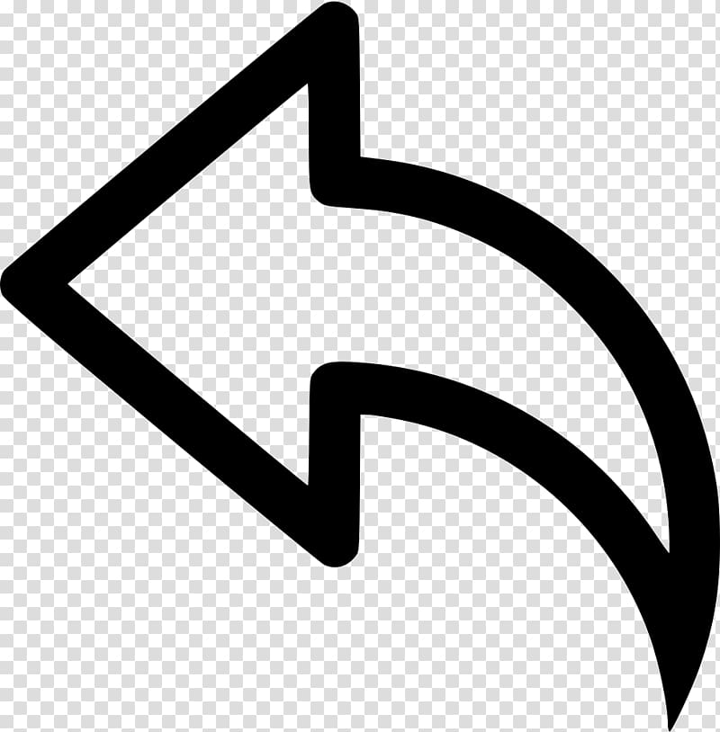

Player 1

Player 2
0
0
Main Menu
Игроки по очереди расставляют фишки. В конце игры подсчитываются очки следующим образом:
каждая линия(вертикальная или горизонтальная) или диагональ (при условии, что ее длина не меньше 4), на которой у данного игрока больше фишек, чем у его оппонента (но не меньше 4), приносит ему одно очко (независимо от того, на сколько фишек больше).
Если на линии одинаковое число фишек каждого игрока, то она не засчитывается никому.
Выигрывает игрок, набравший большее число очков.